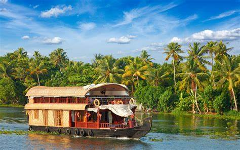

Unforgettable travel
experiences with
a positive impact

Taj Mahal
The Taj Mahal is an ivory-white marble mausoleum on the southern bank of the river Yamuna in the Indian city of Agra. It was commissioned in 1632 by the Mughal emperor Shah Jahan to house the tomb of his favourite wife, Mumtaz Mahal; it also houses the tomb of Shah Jahan himself.

Kerla
Kerala, southwestern coastal state of India. It is a small state, constituting only about 1 percent of the total area of the country. Kerala stretches for about 360 miles (580 km) along the Malabar Coast, varying in width from roughly 20 to 75 miles (30 to 120 km)

Kashmir
Kashmir is an ideal destination to plan a family tour and honeymoon holiday in India. The picturesque Gulmarg, Srinagar, Pahalgam or Sonmarg, make a holiday with family, or honeymoon in Kashmir a wonderful experience. Kashmir is even home to the popular Amarnath Cave which calls the ardent devotees Lord Shiva from across the world.

Rajasthan
The land of kings, Rajasthan is a vibrant state that attracts history buffs, architecture lovers, wildlife enthusiasts and foodies alike. It lies in the north-western part of India and boasts an impressive amalgamation of natural beauty and manmade structures. From beautiful lakes, vast deserts and rich wildlife to magnificent palaces, forts and temples, the city has so many things for a wonderful vacation.

Munnar
Nestled in the Western Ghats in the state of Kerala, Munnar is counted among the most serene and beautiful tourist places in India. The hill station boasts impeccable natural beauty in the form of rolling hills, scenic valleys, virgin forests, waterfalls, streams, national parks, tea and spice plantations and winding walkways. However, it is the unmissable colonial charm of Munnar that attracts many tourists time and again.

Shimla
Located in Himachal Pradesh at a height of 2276 metres above sea level, Shimla has been attracting honeymooners and families for decades. This hill station was the summer capital of British India, and so, the stunning colonial architecture and old-world charm here are unmissable. Shimla mesmerises nature lovers as well with its snow-covered mountains, rolling valleys, and beautiful lakes.